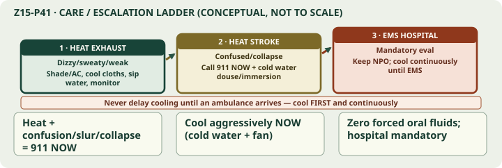

Z15-P41 · Disaster scenarios · New manuscript
Coordinate immediate rapid cooling and 911 for community heat-stroke collapse
Save lives during urban, workplace, or event heat-stroke collapses by cooling immediately on scene while EMS responds.
When it applies · Outdoor work crews, summer festivals, neighborhoods, or hot un-air-conditioned homes during heat waves.
Equipment · Cold water hoses/tubs/ice-water soaked sheets, shade/AC room, fan, and 911 phone access.

Actions
- Treat ANY sudden confusion, slurred speech, stumbling, agitation, seizure, fainting, or hot skin during a heat wave as LIFE-THREATENING HEAT STROKE—call 911 IMMEDIATELY and move the person into shade or air conditioning without delay.[T09, T05, D09]
- Start cooling while help is on the way. Move to shade or a cooler place when safe and cool the skin with water and airflow. Discuss immersion with dispatch, particularly when airway protection, patient type or available help is uncertain.[T09, M27]
- Give nothing by mouth to a confused or drowsy person. Monitor breathing and follow 911 instructions until EMS arrives.[T09, M27]
Failure recognition · Seating a slurring, stumbling heat-stroke victim on a sunny curb handing them a warm bottle of water while waiting 15 minutes for an ambulance without cooling.[T09, T05]
Verify · Confirm 911 dispatched, continuous cold-water dousing/immersion active, airway protected, and zero forced oral fluids given.[T09, M05]
Stop or change course · Heat stroke ALWAYS demands continuous rapid cooling and mandatory emergency hospital transport—never pause evaluation even if alertness flickers back.[T09, T05]
Evidence and editorial notes
- D09 · FEMA / Ready.gov · Extreme Heat (current web edition)
- Section: Extreme Heat Waves, Heat Domes, and Power-Outage Cooling Plans · Conditions: Prolonged heat advisories, excessive heat warnings, and grid-strain brownouts
Support: Identify public cooling centers and air-conditioned backup locations ahead of heat waves, check twice daily on older adults/children/chronically ill neighbors, block solar gain through windows, never leave people or pets in parked vehicles, and activate 911 immediately for heat stroke.
Limitations: Electric fans alone do not prevent heat illness when indoor air temperatures climb into extreme heat ranges (above ~95°F) with high humidity. · Conflicting evidence: None; aligns with CDC-HEAT, E08, E19, and T09.
Editorial note: Anchors urban/rural heat-wave resilience and vulnerable-neighbor checks. · Specialist reviewer: Public health and emergency medicine
Primary source · checked 2026-11-24 - M05 · NIH / MedlinePlus · Shock (current web edition)
- Section: Recognizing Circulatory Shock and Positioning · Conditions: Injured or ill patient with pale cool clammy skin, rapid weak pulse, confusion, or dizziness
Support: Treat suspected shock as a life-threatening emergency: call 911, control external bleeding, keep the person warm and insulated from cold ground, and do not give food or drink.
Limitations: Field responders cannot diagnose internal hemorrhage or administer IV fluids. · Conflicting evidence: None; reinforces keeping suspected shock patients NPO and warm.
Editorial note: Core shock recognition and stabilization boundary in Z10. · Specialist reviewer: Emergency and wilderness medicine
Primary source · checked 2026-11-24 - M27 · CDC NIOSH · Heat-related Illnesses (current web edition)
- Section: Heat stroke: symptoms and first aid · Conditions: Suspected heat stroke; initiate emergency activation and cooling together
Support: Call EMS and cool immediately. Select cold-water immersion or cooling with water and airflow based on safe access and airway protection.
Limitations: Exertional and classic heat stroke and vulnerable patients warrant specialist cooling protocol review. Avoid oral fluid in impaired alertness. · Conflicting evidence: See A02 claim audit for boundaries.
Editorial note: Added in A02 to separate a consequential source boundary. · Specialist reviewer: Emergency medicine and heat illness
Primary source · checked 2026-11-24 - T05 · CDC NIOSH · Heat-related Illnesses (current web edition)
- Section: Heat stroke > First aid · Conditions: Heat exposure and altered mental status
Support: Heat illness may be life-threatening. Seek emergency care for suspected heat stroke and start cooling promptly.
Limitations: Delays in active cooling worsen neurologic outcomes. · Conflicting evidence: None; aligns with CDC-HEAT.
Editorial note: Core heat-emergency escalation rule. · Specialist reviewer: Emergency and wilderness medicine
Primary source · checked 2026-11-24 - T09 · CDC NIOSH · Heat-related Illnesses (current web edition)
- Section: Heat stroke > Symptoms and First aid · Conditions: Suspected heat stroke after exertion or heat exposure
Support: Confusion, slurred speech or loss of consciousness can indicate heat stroke. Call 911 and cool the person promptly.
Limitations: Exertional heat stroke can occur even in moderate ambient temperatures during heavy effort. · Conflicting evidence: None; aligns with T05.
Editorial note: Triggers immediate emergency call and cooling stop condition. · Specialist reviewer: Emergency and wilderness medicine
Primary source · checked 2026-11-24
Source lineage · CDC NIOSH Heat Illnesses and Ready.gov Heat; new manuscript · Classification · New manuscript.